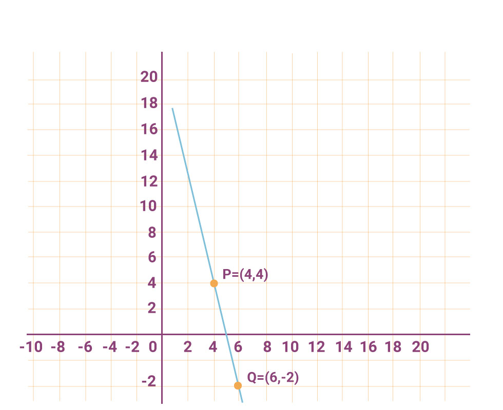
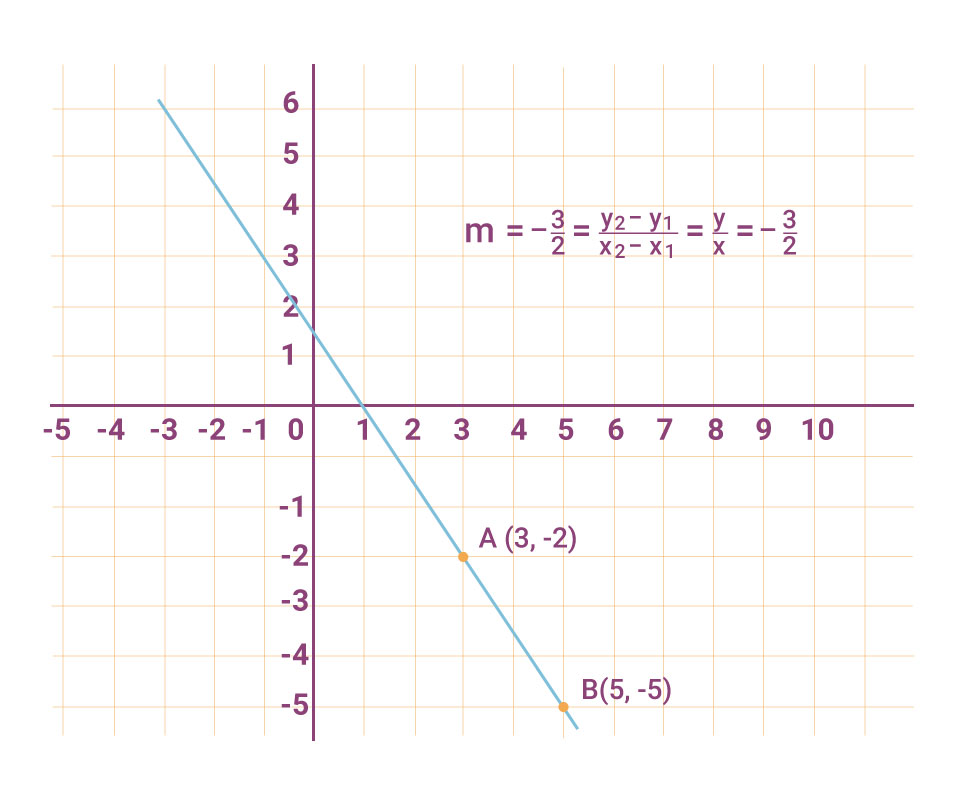

Actividad 1
Consideremos ahora las siguientes formas de la recta.
Forma Cartesiana (Ecuación de la recta que pasa por 2 puntos).
Ejemplo 1.
Determina la ecuación general de la recta que pasa por los puntos : Con los datos proporcionados utilizamos la forma cartesiana expuesta en la figura 1.
- $y - y_1 = \frac{y_2 - y_1}{x_2 - x_1} (x - x_1)$
Sabemos que $P(x_1 ,y_1) , Q(x_2 , y_2)$ y x e y son las variables de la ecuación pedida por lo tanto:
- $y-4 = \frac{-2-4}{6-4} (x-4)$
- $y-4 = \frac{-6}{2} (x-4)$
- $y-4 = -3 (x-4)$
- $y-4 = -3x + 12$
Igualando a cero la ecuación
- $3x - 12 + y -4 = 0$
Por lo tanto.
- $3x + y - 16 = 0$

Figura 1.
Ejemplo 2
Determina la ecuación general de la recta que pasa por el punto y cuya pendiente $m = - \frac{3}{2}$. Graficar.
Solución: Consideremos la forma punto-pendiente y utilicemos la fórmula expuesta en la figura 1 $y - y_1 = m(x-x_1)$ .
Las coordenadas del punto A son $A(x_1 , y_1)$ . Por lo tanto:
$y-(-1) = - \frac{3}{2} (x-3)$
$y+2 = - \frac{3}{2} (x-3)$
$2(y+2) = -3(x-3)$
$2y +4 = -3x +9$
$3x - 9 +2y +4 =0$
$3x + 2y -5 = 0$

Figura 2.
Ejemplo 3
Dada la ecuación $2x - 3y +6 = 0$, determina su pendiente, la ordenada al origen y la abscisa al origen.
Solución: Considera que la ecuación dada está en la forma: $Ax + By + C = 0$, Donde $A= 2$, $B= -3$, $C=6$ . Esta es la forma general de una recta, cuando la ecuación está en esta forma podemos obtener los elementos solicitados usando las siguientes fórmulas:
$m= -\frac{A}{B}$ , $b=-\frac{C}{D}$ , $a=- \frac{C}{A}$
Entonces:
$m= -\frac{2}{-3} = \frac{2}{3}$
$b= - \frac{6}{-3} = 2$
$a = - \frac{6}{2} = -3 $
Nota: Recuerda que la ordenada (y) y la abscisa(x) al origen son puntos de la recta dada por lo tanto tendríamos los puntos:
Ingresa a la siguiente liga como apoyo para la solución de los siguientes problemas en la actividad.